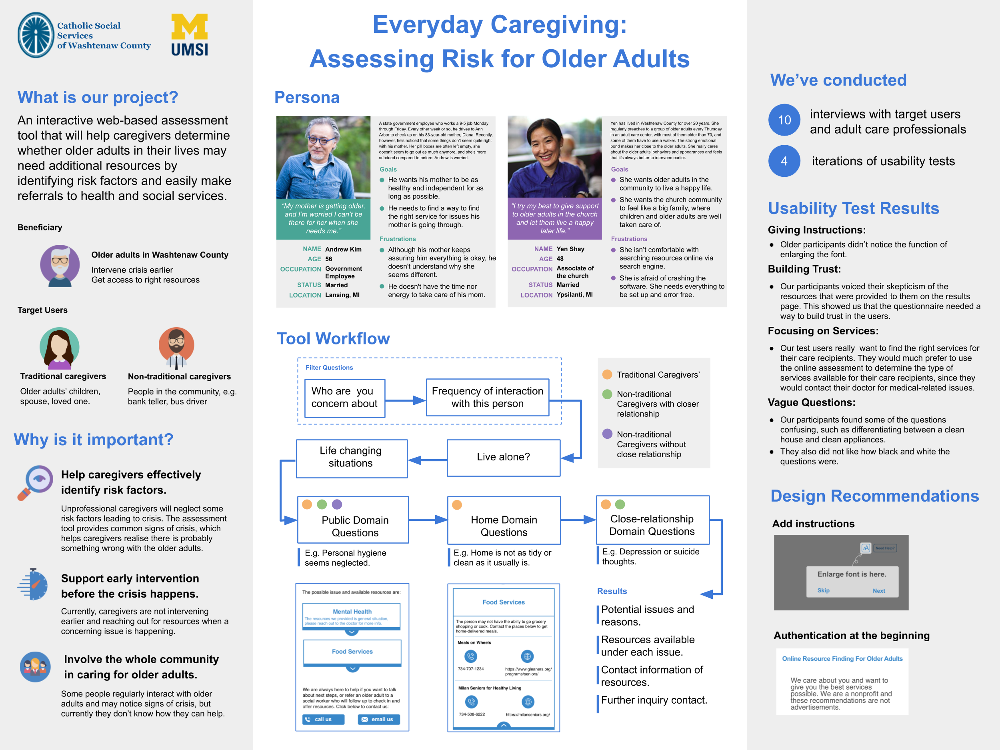

SI Community Engagement → infoLab
Design · UX Research · Development
Adobe Illustrator · Adobe XD · Miro
Competitive Analysis · Personas · Affinity Diagramming · Usability Testing
Our client, the Catholic Social Services of Washtenaw County (CSSWC), is a non-profit organization with a project called “Ahead of the Curve Washtenaw”. It is a tech-oriented, evidence-based program to engage, train, and support people caring for older adults in Washtenaw County. Ahead of the Curve Washtenaw will have three components: a Caregiver Training Program, a Caregiver Assessment Tool, and a Senior Resource Directory. This research project focuses on the Caregiver Assessment Tool.
Primary Competitors: Samarth, Senior Housing Net, CaraVita, Woodland Ridge, Midcoast Senior Health Center, and New Perspective Senior Living.
Secondary Competitors: AAA’s self-assessment driving brochure, WRC, and Leading Age Western New York
Niche Competitors: HealthinAge and QueenDom Elder Care Test
Within the competitive analysis, the criteria we will examine will be ease of use, efficiency of use, features that work well and features that don’t work well, and how they present resources to the user at the end of the assessment. We paid attention to information organization and hierarchy.
We conducted interviews to learn more about caregivers’ perspectives on the online assessment tool that would help with early prevention before issues occur and how they find online resources to help with caregiving. The goal was to reach interviewees from varying geographic areas of Washtenaw County to see differences of goals and pain points.
Participant 1 Audio Recording // Transcript
Through interviews with various caregivers, our team created an affinity diagram, which serves to visualize and categorize the initial data and feedback we received. This allowed us to establish categories of behavior, needs, and wants for the online assessment tool. We distinguished four common themes: "The content I want to see", "How I seek resources", "Caregiver characteristics/functions", and "How I feel about searching online".
By taking the demographics of the interviewees and generalizing what types of people are going to use the online assessment tool, our team created three personas; one for a traditional caregiver, a non-traditional caregiver, and a professional caregiver. The personas were shaped to represent three groups of typical interviewees and their attitudes and behaviors toward the online assessment tool.

Our interviewees expressed that they are self-reliant when it comes to searching for resources online. They don’t have any trouble finding information they are looking for and would rather find the information on their own than bother their supervisor.
Our interviewees expressed having a direct contact to the resource is most useful. Some interviewees were discontent with having to constantly be redirected to different people when they called an organization about an issue. Our interviewees wish for someone to reach out directly to take care of the issue. Along with that, they want to see the name of the organization, phone number, website, and email address when the resource is listed.
When searching for resources online, our interviewees used search terms that were synonymous with the term “elderly.” A few examples were: geriatric, aging parents, or senior. Some of our interviewees also search for resources online after a dramatic event has occurred such as the passing away of a loved one, so search inputs will vary then.
Our interviewees expressed that the last page of the online assessment tool where users are presented with a list of resources should be the last stop. This means that people don’t need to go elsewhere to find further resources. Essentially, the tool should be precise and specific to what the user needs and wants.
The main issue we found with our participants were related to the questions. Participant 1 (P1) found some of the questions confusing, such as differentiating between a clean house and clean appliances. Other sources of confusion involve the level of “loneliness” a person is exhibiting, and how much of an “increase in drug use” is needed to become a concerning issue. P1 also does not like how black and white the questions are. She noted how there are many nuances between each question, and the simple checklist can be confusing for that reason. Other participants also suggested a round of second questions, or a range for each question, in order to get information across more accurately.
One of the main questions we received from participants was, “how do I know I can trust these sources?” The main issue for both traditional and nontraditional caregivers is the trustworthiness of the resources presented. P1 and P2 both voiced their skepticism of the resources provided to them on the results page. This showed us that the questionnaire needed a way to build trust in users. This can be seen in the way we added a note toward the beginning of the prototype to assure users of the legitimacy of the resources recommended.
Our participants really liked the idea of independently using an assessment to find the right resources and services. They in particular wanted to find the right services for their care recipients. P1 in particular stated that if there was a medical or mental health issue on hand, she would consult her mother’s healthcare provider and doctor first before looking to an online assessment resource. In her case, as a traditional caregiver, she would much prefer to use the online assessment to determine the type of services she could use to ensure her mother could live her lifestyle as long as possible before having to enter nursing care. With this in mind, the assessment should have more of an emphasis on finding the right types of services for users.
On the results page, we show the CSSWC phone number and a few resources users could think about connecting with. Each service in the resources section has their name, their number, and their website for the users to click on and connect with. However, our participants told us they’d like more information on the resources. This means having more info on who the service is, what they do, as well as maybe other bits of important information specific to their service. In addition, P3 would like to easily see the address of the service provider right on the results page, which would make things easier for him.
In addition to a research paper, we presented at the UofM Technology Expo, where we had a poster and a working prototype to show to interested passerbyers.
